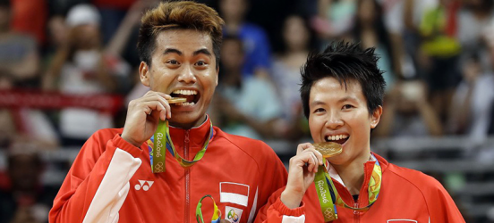
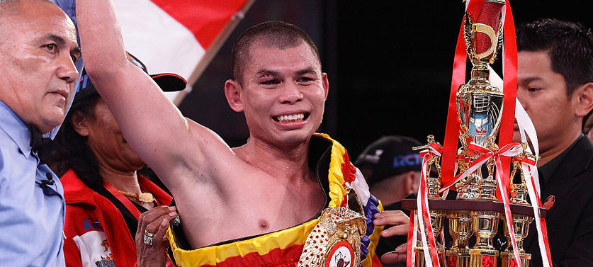
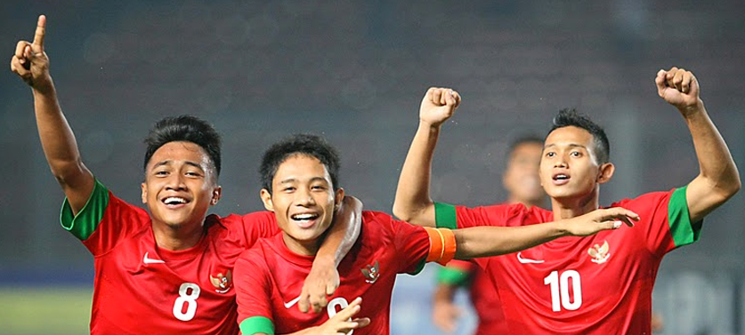
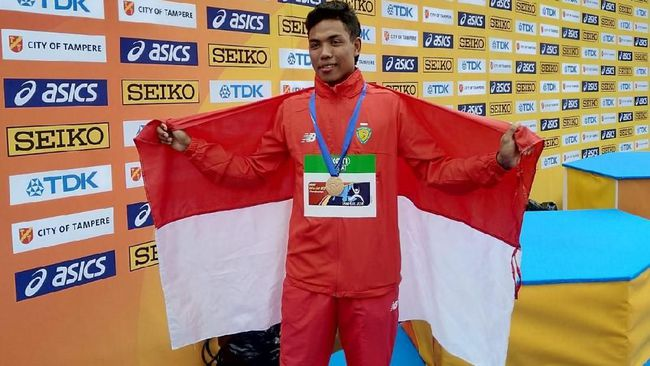
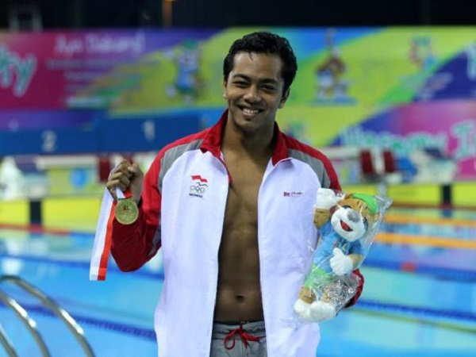

GALERI
- 
Badminton
Cabang olahraga bulu tangkis Indonesia memang mendapat sorotan dan cukup dipandang di kancah dunia. Pasalnya, banyak sekali atlet-atlet Indonesia yang berprestasi dalam berbagai olimpiade maupun kejuaraan dunia. Mulai dari Liem Swie King, Susi Susanti, Alan Budi Kusuma, Taufik Hidayat, Tantowi Ahmad, Liliyana Natsir, hingga Hendra Setiawan dan Muhamad Ahsan.
- 
Tinju
Cabang olahraga tinju Indonesia banyak mendapat sorotan di kancah dunia Sob. Ada 4 petinju asal Indonesia yang berhasil menyabet gelar internasional. Mulai dari Elyas Pical, Nico Thomas, Muhammad Rachman, dan yang terakhir Chris John. Di antara mereka bahkan ada yang berhasil mempertahankan gelarnya hingga jangka waktu bertahun-tahun.
- 
Sepak Bola
Beberapa tahun lalu, tepatnya di tahun 2013 cabang sepak bola Indonesia berhasil meraih prestasi tertinggi di Asia Tenggara (Piala AFF). Sejak diadakannya turnamen tersebut, Indonesia belum pernah menjuarainya. Lalu barulah di tahun 2013, Evan Dimas dan kawan-kawan berhasil menjuarai piala AFF setelah menuntaskan perlawanan sengit Vietnam di laga final dengan adu pinalti.
- 
Lari
Lalu Muhammad Zohri selalu diperbincangkan dimana-mana. Hal tersebut usai dirinya menjadi juara dunia dan meraih medali emas di ajang Kejuaraan Atletik Dunia (IAAF) U-20.Medali emas yang diraih Zohri menjadi medali pertama yang diraih Indonesia sepanjang keikutsertaan dalam ajang tersebut.
- 
Renang
I Gede Siman Sudartawa, atlet renang indonesia pemenang sea games, atlet renang pria berprestasi lainnya dari Bali yang tinggal di Riau. I Gede berhasil memecahkan dua rekor gaya punggung dan ganti beregu pada Sea Games tahun 2011 lalu. Ia juga mendapatkan medali emas dan perak dalam berbagai kejuaraan - kejuaraan di Asia.
-

Balap
Dalam ajang balapan, Indonesia juga mempunyai seorang pembalap yang telah membawa nama Indonesia bisa terdengar di dunia, yaitu pada ajang F1. Rio Haryanto yang menjadi satu-satunya pembalap yang mewakili Indonesia dalam ajang F2. Walaupun belum bisa menginjakkan kaki di kanca F1 dan dengan segala keterbatasan biaya, Roi Haryanto telah sukses membanggakan Indonesia di ajang F2